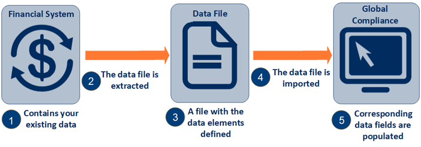

This diagram illustrates the process of preparing and importing data from other applications into Global Compliance:

In stage 1 of the diagram, the data starts out in the host application, which may be a Vertex product, a financial database, or a spreadsheet application. In stages 2 and 3, the host application gathers the data and writes a data file in the appropriate format. In stage 4, the data file is imported into Global Compliance. The data is then stored in Global Compliance (stage 5).
Related topics: